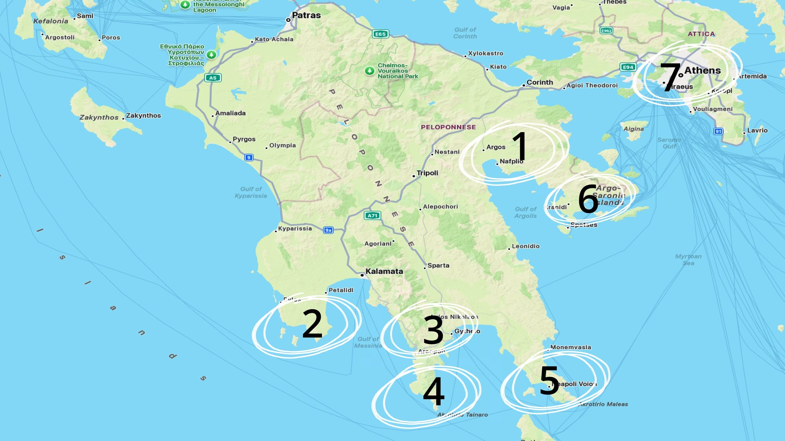
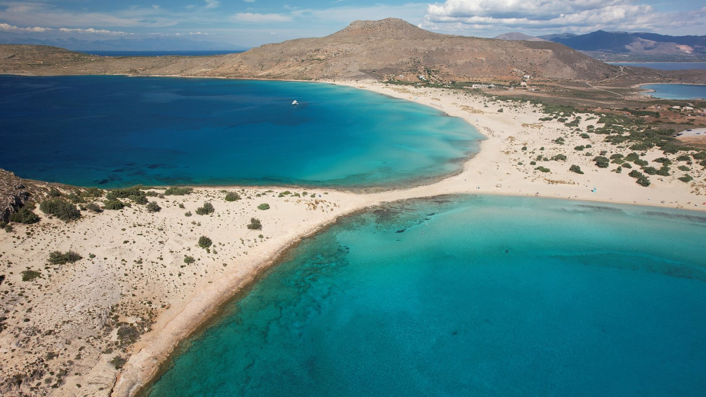
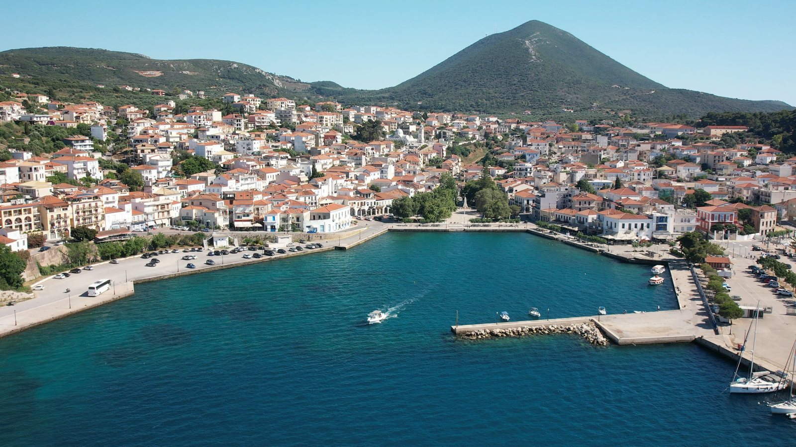

There is one rather large problem with visiting the Peloponnese. And I mean large. Not the sort of problem you can solve by taking a slightly different turning or having a quick look at Google Maps. No, the problem is distance.
The Peloponnese is enormous, and almost everything you will want to see is miles from the next thing you want to visit. You can spend a perfectly enjoyable morning exploring a beautiful little seaside town, only to discover that the beach you've been looking forward to visiting is another hour and a half down the road.
And that's before you've factored in the mountains, winding roads, occasional goats, tractors and the Greek driver who appears to believe that the middle of the road is his personal property.
We've produced a map to help make sense of it all, dividing the Peloponnese into seven areas. It's not intended to be a definitive guide, but rather a way of helping you decide where to stay and what you can realistically explore from each base.
Because here's the thing. You simply cannot visit the Peloponnese and see everything in one go. Well, you could try, but you'd probably need several months, possibly years, and by the time you'd finished you'd be ready for a holiday.
Our approach is much simpler.
It's a much more enjoyable way to travel. Less time driving backwards and forwards, more time actually enjoying Greece.
So, let's look at the seven areas on our map.

AREA 1 – NAFPLIO AND THE ARGOLIS PENINSULA
If you're starting your Peloponnese adventure in Athens, this is an excellent place to begin.
Base yourself in or around Nafplio and you'll have a wonderful mixture of history, beautiful towns, beaches and traditional Greek life right on your doorstep.
Nafplio itself is one of our favourite towns in Greece. With its Venetian architecture, attractive waterfront, narrow streets and rather impressive Palamidi Fortress overlooking everything, it's somewhere you could happily spend a couple of days just wandering around.
A short drive away is Tolo, a popular seaside resort with a lovely beach, plenty of waterfront restaurants and a much more traditional holiday atmosphere than some of the bigger Greek resorts.
But this area isn't just about pretty towns and beaches. History is practically falling out of the trees.
You have Mycenae, one of the most important archaeological sites in Greece, and Epidaurus, famous for its magnificent ancient theatre, which is still used for performances today.
And when you've had enough ancient stones to last you a lifetime, there's always Karathona Beach. A beautiful stretch of sand just outside Nafplio, perfect for a lazy day beside the sea.
Three to five days here will give you a good introduction to the Peloponnese without feeling as though you're spending your entire holiday in a hire car.
Read our blogs: Nafplio
Tours we'd book here: Mycenae and Epidaurus day tour · things to do around Nafplio
AREA 2 – METHONI AND THE MESSINIAN COAST
Now we're getting somewhere.
Methoni makes a fantastic base for exploring the south-western corner of the Peloponnese. It's a lovely little seaside town with a relaxed atmosphere, a beautiful beach and one of the most impressive Venetian castles in Greece.
And the really good news is that you're surrounded by places worth visiting, most of them within roughly 30 minutes of your accommodation.
Finikounda is a lovely seaside resort with a sandy beach, waterfront tavernas and a relaxed holiday atmosphere.
Koroni is another favourite, with its picturesque harbour, traditional streets and imposing castle overlooking the sea.
Pylos has a beautiful natural harbour, a lovely central square and plenty of places to stop for lunch or a coffee.
Then there's Voidokilia Beach, which is quite possibly one of the most spectacular beaches in Greece. Its almost perfect horseshoe shape, turquoise water and surrounding sand dunes make it look as though someone has designed it specifically for a travel brochure.
You can also visit Costa Navarino, with its luxury hotels, spectacular golf courses and rather more expensive-looking version of Greek life.
The beauty of staying around Methoni is that you can explore somewhere different every day and still be back in time for an evening drink overlooking the sea.
This is exactly the sort of area where our three-to-five-day base system works brilliantly.
Read our blogs: Methoni · Finikounda · Koroni · Pylos · Voidokilia Beach
Tours we'd book here: Navarino Bay sea kayaking · things to do around Pylos and Methoni
AREA 3 – THE MANI PENINSULA
If Greece had a personality test, Mani would probably refuse to fill it in.
This is a wonderfully rugged part of the Peloponnese, with dramatic mountains, stone villages, beautiful coastal scenery and a history that is every bit as fascinating as the landscape.
It's also an area where you need to allow yourself time. The roads can be winding, and distances that look quite manageable on a map can take considerably longer than you might expect.
From a base around this area, you can explore Gythio, a charming harbour town with colourful waterfront buildings and a relaxed atmosphere.
There's Limeni, one of the most photogenic villages in the Mani, where traditional stone houses sit right beside wonderfully clear water.
Then there's Oitylo, with its impressive stone architecture and mountain setting.
Further north, you'll find Stoupa, one of our favourite places. It has a lovely sandy beach, a good selection of tavernas and bars, and that easy-going seaside atmosphere that makes you start wondering whether you really need to go home.
Nearby is Agios Nikolaos, a pretty little fishing village, and Kardamyli, with its stone houses, beautiful setting and spectacular mountain backdrop.
You could easily spend five days exploring this area, and still find yourself wishing you'd booked another week.
Read our blogs: Gythio
Tours we'd book here: things to do in the Mani · things to do around Kardamyli
AREA 4 – DEEP SOUTH MANI: THE END OF THE ROAD
If Area 3 is rugged, Area 4 takes things to another level.
This is the southernmost part of the Mani Peninsula, where the landscape becomes increasingly dramatic and the villages seem to have been built to withstand just about anything nature can throw at them.
It's also somewhere that feels wonderfully remote.
One of the most fascinating places to visit is Vathia, an almost abandoned village famous for its impressive collection of fortified stone towers. It looks like something from a historical film set, although I wouldn't recommend trying to find a modern supermarket there.
Then there's the Diros Caves, a remarkable subterranean cave system where you can take a boat through enormous chambers filled with spectacular stalactites and stalagmites. It's an extraordinary experience and one of the area's real highlights.
For the more adventurous, there's the walk to Cape Tainaron (Cape Matapan), the southernmost point of mainland Greece. The walk takes you across a stark, rocky landscape to a striking black-and-white stone lighthouse overlooking the meeting of the seas.
It's a spectacular spot and well worth the effort if you enjoy a good walk.
And don't miss Gerolimenas, a charming seaside village tucked beneath a dramatic cliffside backdrop. Its waterfront tavernas serve traditional Maniot food, and it's a wonderful place to stop for lunch and watch the world go by.
This isn't somewhere we'd necessarily choose for a long list of day trips. It's more about enjoying the remoteness, exploring the dramatic landscape and discovering one of the most distinctive corners of Greece.
Tours we'd book here: Diros Caves tours · things to do in the Mani
AREA 5 – NEAPOLI, VIGKLAFIA AND ELAFONISOS
Sometimes you reach a part of Greece and feel as though you've arrived at the end of the world.
Area 5 is a little bit like that.
The south-eastern corner of the Peloponnese is quieter, more remote and perhaps a little less explored than some of the better-known destinations.
Base yourself around Vigklafia or Neapoli, and you'll have access to some wonderful places.
The big attraction here is Elafonisos Island, reached by a short ferry crossing from Pounta. It's famous for its magnificent sandy beaches and astonishingly clear turquoise water.
Simos Beach is the star attraction, with its sweeping white sand, shallow water and almost Caribbean-looking scenery. It's the sort of place that makes you wonder why anyone bothers flying to the Caribbean in the first place.

You can also explore the ancient sunken city of Pavlopetri, just off the coast near Pounta, one of the oldest submerged towns in the world.
And if you're feeling adventurous, there's Kythira Island, another beautiful Greek island with lovely beaches, traditional villages and a much more laid-back atmosphere.
This area is perhaps best suited to those who enjoy escaping the crowds and don't mind being a little further away from everything.
Read our blogs: Vigklafia & Elafonisos
Tours we'd book here: things to do on Elafonisos · things to do around Monemvasia
AREA 6 – ERMIONI, PORTO HELI AND THE SARONIC ISLANDS
Area 6 is a particularly good choice if you want to combine mainland Greece with a bit of island hopping.
Using Ermioni as your base puts you within easy reach of several lovely coastal destinations, including Porto Heli, with its attractive harbour, waterfront restaurants and rather smart holiday atmosphere.
But the real attraction here is the islands.
You have Poros, a beautiful island with a picturesque waterfront town, narrow streets and a relaxed Greek island atmosphere.
Then there's Hydra, famous for its beautiful harbour, traditional stone mansions and complete absence of cars. Transport is by foot, boat or donkey, which makes a rather pleasant change from trying to find somewhere to park a hire car.
And finally, Spetses, with its elegant architecture, lovely waterfront and sophisticated island atmosphere.
All three islands are worth visiting, although you'll need to plan your ferry journeys carefully depending on where you're staying and which island you want to explore.
Ermioni is a lovely base for this part of the Peloponnese, giving you the opportunity to enjoy the mainland while having some of Greece's most attractive islands within reach.
Read our blogs: Ermioni · Poros
Tours we'd book here: Hydra · Spetses · things to do around Porto Heli
AREA 7 – ATHENS AND THE CORINTH CANAL
Well, Athens is Athens.
You can't really come to Greece without spending some time in its capital. History seems to be hiding around every corner, from the magnificent Acropolis and Parthenon to the ancient Agora and the winding streets of Plaka.
It's a city where you can spend days exploring archaeological sites, museums, rooftop bars and traditional neighbourhoods.
But there's more to this area than ancient history.
The Athens Riviera stretches south along the coast, with attractive seaside suburbs, beaches, marinas, restaurants and beach clubs. It's a completely different side of Athens and makes a pleasant escape from the busy city centre.
And then there's the Corinth Canal, which is well worth a stop if you're travelling between Athens and the Peloponnese.
Completed in 1893, this extraordinary engineering project cuts through the narrow Isthmus of Corinth, separating the Peloponnese from mainland Greece. The canal is approximately 6.3 kilometres long, with steep limestone walls rising dramatically on either side.
It's an impressive sight, particularly from the bridges crossing the canal, where you can look straight down into the narrow waterway below.
You might even be lucky enough to see a boat making its way through, although don't expect a massive cruise liner. The canal is simply too narrow for most large vessels.
It's a fascinating piece of engineering and a great place to break up the journey between Athens and the Peloponnese.
Allow a couple of days for Athens itself, or longer if you want to explore the surrounding coastline.
Tours we'd book here: Acropolis and Acropolis Museum tour · Cape Sounion sunset tour
SO, WHERE SHOULD YOU START?
The good news is that you can start your Peloponnese adventure at either end.
Start in Kalamata if you're flying into the south-west of Greece. From here you can work your way around the peninsula, exploring the Mani, Methoni, the south-eastern coast, Ermioni and Nafplio before finishing in Athens.
Alternatively, start in Athens and work your way south and west, finishing around Kalamata.
Both routes work well. It really comes down to your flights, the amount of time you have available and which areas interest you most.

The Peloponnese rewards slow travel. It's about finding those little fishing villages, stopping at beaches that weren't on your original itinerary, discovering a taverna you hadn't planned to visit and occasionally spending an entire afternoon doing absolutely nothing.
And that's rather the point.
You don't come to the Peloponnese to tick off a list of places as quickly as possible. You come because there's so much to discover that you'll probably want to come back again.
And again.
And possibly again.
Just don't tell the people at home you're going for a fortnight. They'll never believe you when you return years later.